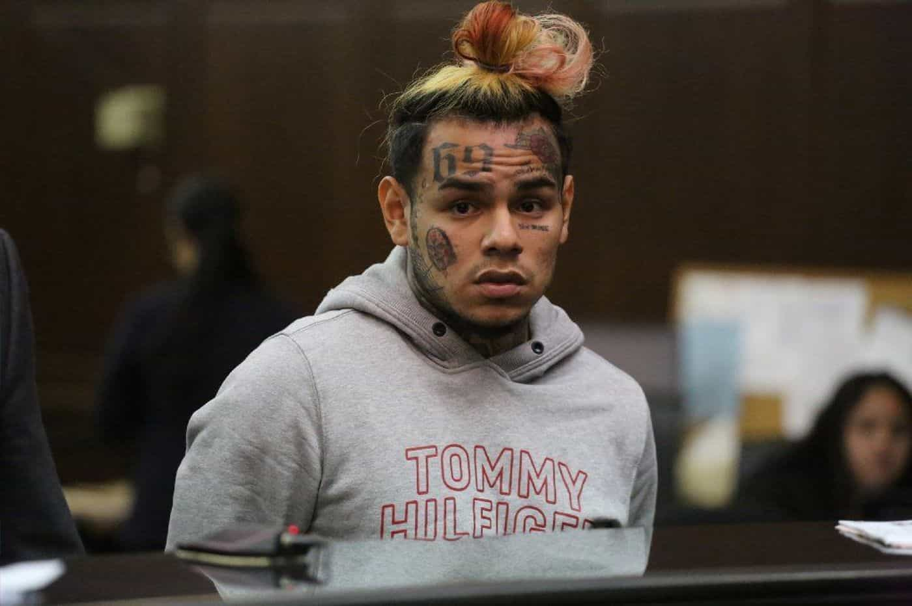

Alfonso Taft is a surfer stoner All-American Aryan alpha male quarterback. Raised in the Northeast, he speaks with a Southern twang for no apparent reason. Host of America's #1 Chadcast.


Clown World is not without a King. His name is Daniel Hernandez, aka Tekashi 69. As a rapper with rainbow hair, absurd facial tattoos, and history of underage sex crimes, he has single-handedly proven President Trump’s infamous quote: “When Mexico sends its people, they’re not sending their best” to be true.
It’s almost as if Donald J. Trump was describing Tekashi 69 when he said, “They’re sending people that have lots of problems, and they’re bringing those problems with us. They’re bringing drugs. They’re bringing crime. They’re rapists. And some, I assume, are good people.”
In fact, Tekashi 69 might meet all the criteria listed above.
Tekashi 69 “pleaded guilty to three felony counts of the use of a child in a sexual performance” after video was discovered of a naked 13-year-old posing naked on an 18 year-old Tekashi 69. In Mexico, where the age of consent is 12, this wouldn’t be considered a crime. In Tekashi’s defense, he claims he did not know the girl was underage. As part of his plea deal, 69 was ordered to complete his GED.
In regards to drugs, Tekashi admitted to getting fired from a convenience store job for selling heroin and beating up the storeowner. After returning home from his European tour he was arrested in NYC for choking a 16-year-old fan. Tekashi is also currently being investigated for a shooting involving rapper Chief Keef.

On June 2, 2018, two black males wearing hoodies fired at rapper Chief Keef and missed outside the W Hotel in Times Square, NYC. No arrests have been made as a result of the broad daylight shooting in the City’s most populated district.
After news broke of the attempted slaying, Tekashi 69 took to social media to taunt his rival and imply that he may know something about the shooting.
CHIEF KEEFSHOT AT IN NYC… Rapper Unharmed
The beef with Chief Keef stems from Tekashi 69 publicly face-timing with Chief Keef’s cousin Tadoe’s girlfriend. Tadoe later beat the shit out of his girl for face-timing with Tekashi.
After the shooting, Tekashi continued ruthlessly trolling Chief Keef by posting videos fornicating with one of Chief Keef’s baby mothers and later taking her out shopping. Tekashi even traveled to Chief Keef’s old neighborhood to broadcast his disrespect virally.
Prior to Tekashi, Chief Keef held the title of the most ignorant rapper likely to kill somebody in a fued. It’s important to put Chief Keef’s thug status in context because before 69, few dared cross Chief Keef and Lil Reese– two Chicago thugs with a reputation for murder.
At the age of 16, Chief Keef was placed under house arrest as a result of a shootout with police. After filming a video for smash hit, “I don’t like” Chief Keef signed a deal with Interscope Records. The record deal didn’t stop Chief Keef’s and his gang’s penchant towards violence and crime.
In 2012, Chicago rapper Lil Jojo began trolling Chief Keef and his affiliate Lil Reese on social media. In a viral video where Lil Jojo and his friends drove by Lil Reese hurling insults, Lil Reese can be heard saying “Immah kill you” at the end of the clip. Later that evening, rapper Lil Jojo was shot and killed on his bicycle during a drive by shooting. Hours after the shooting Chief Keef tweeted:
Its Sad Cuz Dat Nigga Jojo Wanted To Be Jus Like Us #LMAO
— Glory Boy (@ChiefKeef) September 5, 2012
Rap beef is fascinating to study from a sociological standpoint. Within rap and it’s criminal underground kin there is a process of “checking in” when traveling into rival territory. This process involves contacting local gang leaders, and “OGs” of a city or territory prior to arrival. If one does not “check in” he is subject to getting robbed or killed.
Does the King of Clown world show respect to the “territory” of feudal ganglords? Absolutely not. Tekashi is notorious for refusing to “check in” when traveling to other cities. As a result he receives constant death threats from gangs.
Does it not make perfect sense that the King of Clown World would have rainbow hair, teeth, and a tattoo of Jigsaw from the Saw horror film series tattooed on his face? Would the King of Clown World not be a rainbowed rhyming criminal with YouTube views in the hundreds of millions? Would it not make perfect sense that the King of Clown World is an Insane-Clown-Posse-Beastie-Boys-MS-13-hybrid? If Donald Trump is a misunderstood billionaire possessed to save Gotham, is Tekashi 69 his not so serious counterpart? If there were an open audition for the King of Clown World Tekashi 69 would make a convincing lead.
50 cent has confirmed Tekashi 69’s title of King of Clown World by co-signing 69’s claim as “The King of New York.”
Be Royal in Fashion: Act Like a King to be Treated Like One – 48 Laws of Power by Robert Greene
In a world where dissidents of a global technocratic world order largely choose to remain anonymous online out of fear of being “doxed,” the King of Clown World doxes himself. 69 has given out his address repeatedly and brags about it on record.
These niggas lookin’ for me, you could hit my jack
I done dropped my address, y’all know where 6ix9ine at
In a time where literal clowns behave with more class than a significant portion of American women, a bastardized constitutional republic referred to as a liberal democracy begets Clown World, the only true Monarchy of the West. It only makes sense Clown world would eventually crown a King.
Read More: How To Enjoy Life In Clown World